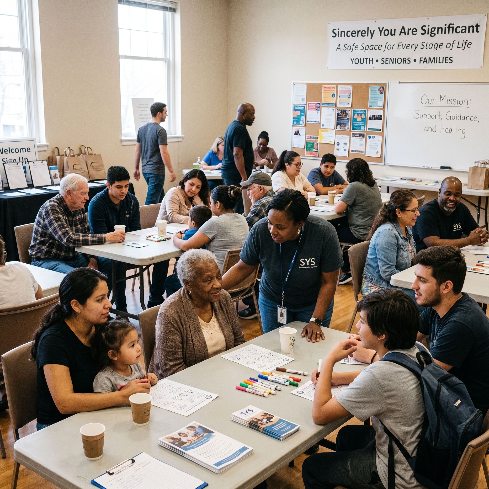

Guiding Youth, Empowering Lives, Building Futures
Compassionate, individual-centered human services designed to meet youth, families, and seniors where they are — providing structure, hope, and community support in a safe and dignified environment.
Dedicated Support by Appointment
At Sincerely You Are Significant, Inc., we recognize that personal healing, youth guidance, and family stability cannot be rushed. To ensure every individual receives focused, personalized attention with the highest level of dignity and confidentiality, all in-person consultations and program sessions are conducted strictly by appointment.
Appointment-Only Setting
In-person appointments at our Jonesboro location provide a private, quiet space free of hurried waiting rooms, ensuring dedicated time with provider Bianca Reid and our supportive staff.
Confidential & Dignified
Every story is received with empathy and profound respect. We foster a trusted safe harbor where youth, seniors, and families can speak openly without fear of judgment.
Simple Ways to Inquire
Call us directly at 404-997-2563, email admin@youaresignificant.org, or send an inquiry through our contact form.
Administrative Office: Eagles Landing Pkwy, Stockbridge, GA 30281 • In-Person Services: Jonesboro Office (Appointment Only). Driving directions and appointment confirmation details are provided directly to clients upon scheduling to protect client privacy.

Youth Guidance & Mentorship
Guiding young people toward purpose, character, and self-worth through dedicated mentorship, positive role models, and structured encouragement.
Our youth initiatives exist to counteract the isolation, confusion, and pressure confronting today's generation. By creating a warm, supportive haven, we help young people realize their intrinsic significance, develop emotional resilience, and make wise life choices that build a sustainable future.
Family Support Services
Strengthening the family unit with compassionate assistance, stability resources, and thoughtful guidance through life's unexpected trials.
We believe healthy, supported families are the bedrock of flourishing communities. When households face stress, transition, or hardship, Sincerely You Are Significant walks beside parents and caregivers to restore stability, enhance communication, and connect families with vital community solutions.


Senior Support & Care
Honoring our elder generation with compassionate presence, regular check-ins, and supportive services that promote dignity and community connection.
Seniors hold a revered place in our hearts and community. Too often, aging brings isolation, mobility hurdles, and limited social engagement. SYS provides dedicated companionship, encouragement, and practical advocacy so that our elders know they are never forgotten, always significant, and surrounded by care.
Community Outreach
Cultivating unity, sharing practical hope, and building collaborative bridges throughout Stockbridge, Jonesboro, and surrounding communities.
True impact thrives when an agency steps outside its four walls. Guided by our values of Faith, People, Families, Community, and Impact, SYS actively engages our neighbors through outreach events, collaborative initiatives, and community service projects designed to lift up those who need support most.

How to Get Support
Getting started is simple, respectful, and confidential. Follow these straightforward steps to connect with our team and schedule an appointment.
Initial Inquiry
Reach out by calling 404-997-2563, emailing admin@youaresignificant.org, or submitting our online form. Let us know what area of support you or your loved one needs.
Appointment Scheduling
Our intake team will conduct a confidential preliminary conversation and coordinate an appointment time that works for you at our Jonesboro location.
Intake Consultation
Meet with our team in a peaceful, private setting. We listen to your story, understand your specific circumstances, and outline available programs and community resources.
Walking Together
Embark on your journey with regular guidance, mentorship, or family support. We stand by your side as an enduring anchor of encouragement and stability.
Intake Preparation
For youth mentorship sessions, parent or legal guardian consent is coordinated during the initial consultation call. Our coordinator will inform you of any basic documentation or notes to bring to your appointment.
Frequently Asked Questions
Find answers to common questions about our services, appointment scheduling, program accessibility, and community engagement.
How do I schedule an appointment with Sincerely You Are Significant?
All in-person consultations, mentorship meetings, and family sessions at our Jonesboro location are arranged strictly by appointment. To schedule, please call our main line at 404-997-2563, send an email to admin@youaresignificant.org, or complete the inquiry form on our Contact page. Our team will promptly get in touch to confirm your appointment time and provide location details.
Who is eligible to participate in SYS programs and services?
We welcome youth, teenagers, seniors, families, and individuals throughout Stockbridge, Jonesboro, Henry County, Clayton County, and neighboring South Metro Atlanta communities who are seeking structure, mentorship, and positive community connection.
Is there a fee or cost to receive support from SYS?
Sincerely You Are Significant, Inc. is an official 501(c)(3) nonprofit human services agency committed to keeping essential support, stability, and care accessible to those in need. Please speak directly with our team at 404-997-2563 or admin@youaresignificant.org to discuss program availability and any specific workshop options.
Where are program sessions and consultations held?
Our administrative office is located along Eagles Landing Pkwy in Stockbridge, GA 30281. In-person client appointments, consultations, and group sessions take place at our Jonesboro location by appointment only. Exact address details and driving instructions are provided upon scheduling to safeguard client privacy. Phone and virtual consultations may also be coordinated upon request.
Can a school, church, or community partner make a referral?
Yes. We warmly welcome referrals from parents, legal guardians, school guidance counselors, local pastors, civic leaders, and fellow social services agencies. Please contact us via phone or our contact page to initiate an inquiry.
Are SYS programs open to individuals of all backgrounds?
Yes, unconditionally. While Sincerely You Are Significant, Inc. is rooted in Christian faith and the biblical conviction to love and serve others (inspired by Habakkuk 2:2), all human services, youth programs, and family support are open to everyone regardless of faith background, culture, or personal history. Every person who walks through our doors is treated with dignity, compassion, and deep respect.
Ready to Take the Next Step?
Whether you are seeking guidance for your teen, support for your family, companionship for an elder, or wish to partner in community outreach — we are here to walk with you. Every journey toward significance begins with a conversation.